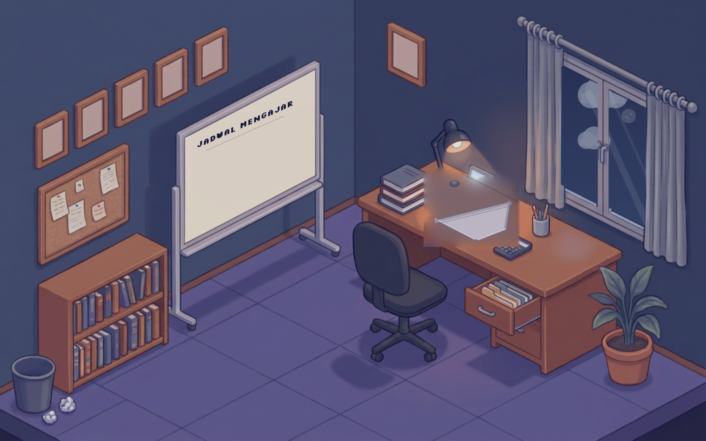
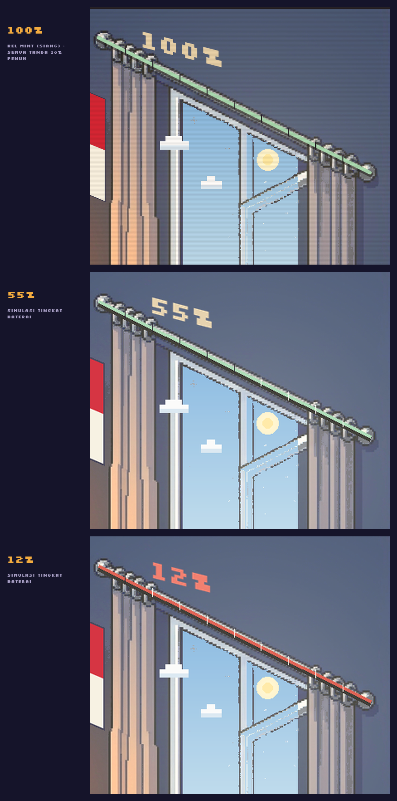
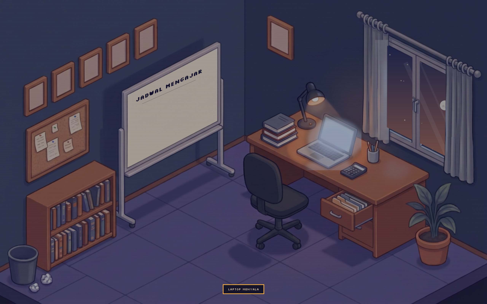
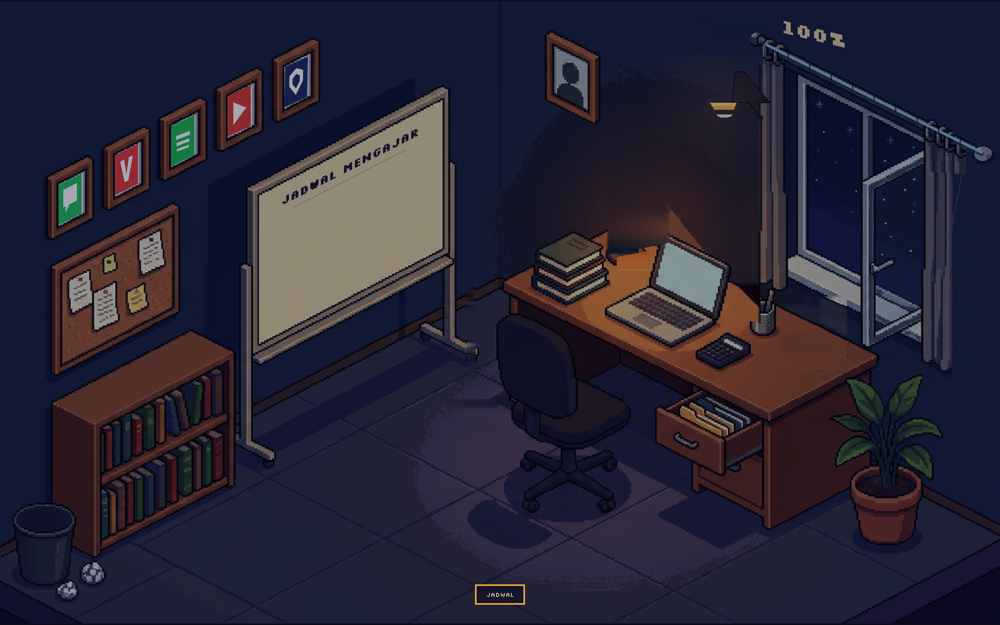
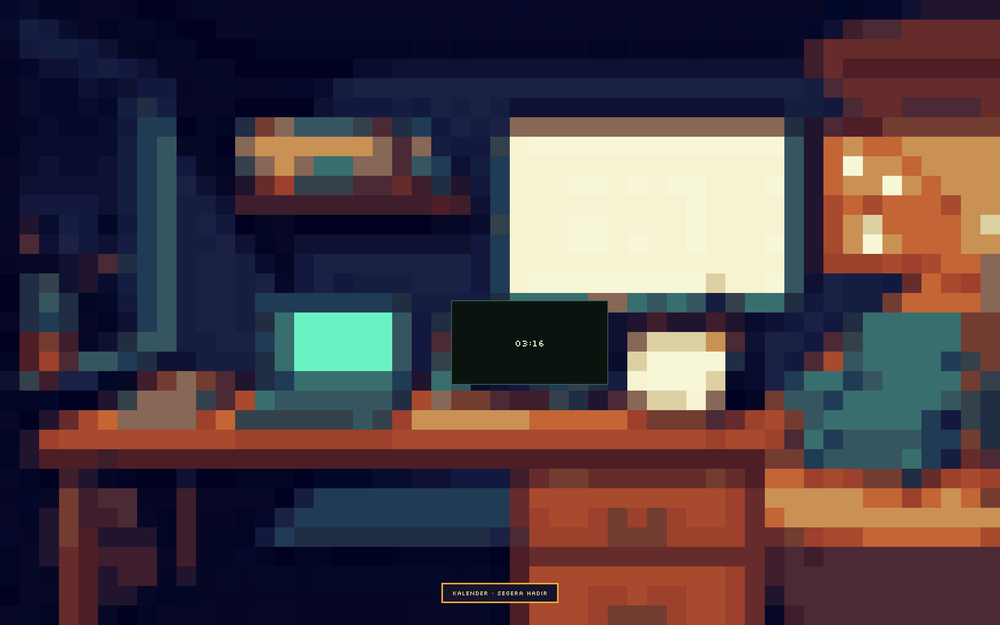
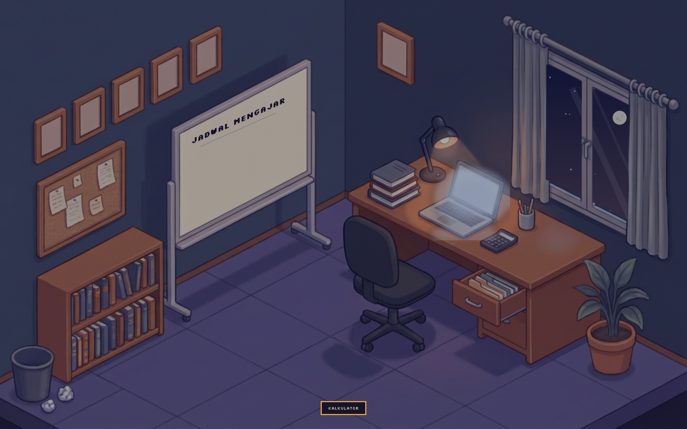
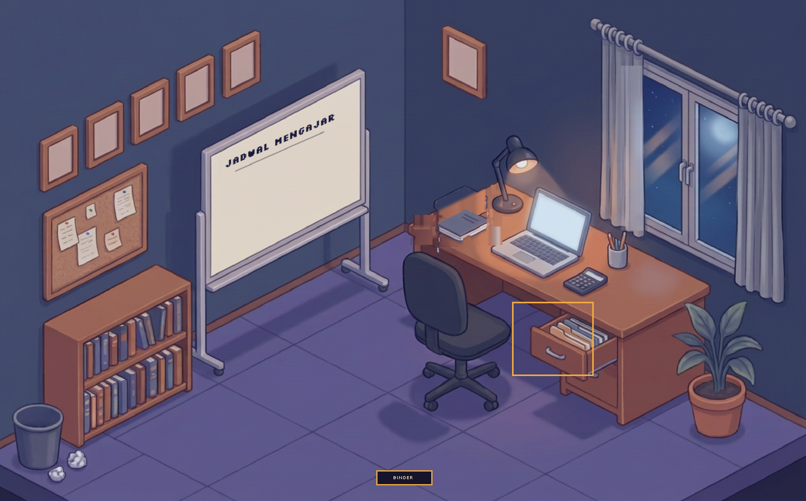
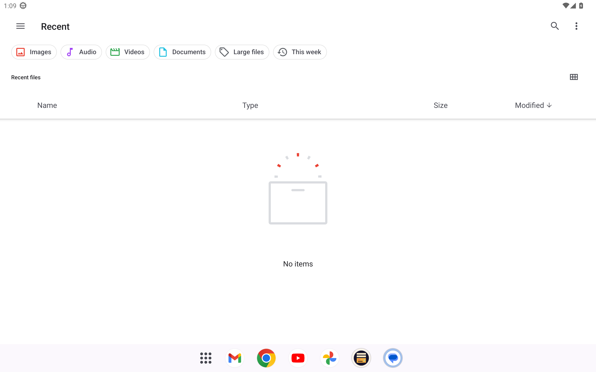
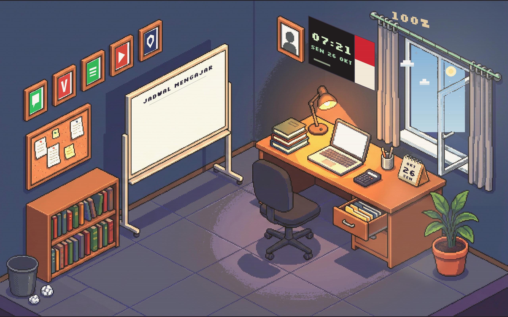

Tampilan launcher

Objek yang bisa diketuk
- Laptop → Jurnal
- Tumpukan buku di meja → Nilai
- Kalkulator → Kalkulator
- Tempat pensil → Alat Tulis
- Kalender meja → Kalender (hari, tanggal, bulan hari ini)
- Laci meja dan rak buku → Binder Materi
- Papan tulis → Absensi
- Papan pin → Buku Catatan
- Papan tulis “Jadwal Mengajar” → Jadwal
- Foto user → Profil & pengaturan
- Jendela → Kelas
- Tempat sampah di sudut kiri bawah → file manager (aplikasi berkas bawaan)
- 5 bingkai di atas papan pin → WhatsApp, Vivaldi, Spotify, YouTube, Sinaga Jateng
Rel gorden sebagai penunjuk baterai

Muka hidup di dinding
- Papan tulis berjudul “Jadwal Mengajar” rata tengah di bagian atas.
- Kalender meja tebal; saat tanggal berganti halamannya melipat lalu muncul kembali dengan angka baru.
- Angin menggerakkan gorden dan daun tanaman.
Bukti ketukan di perangkat






com.android.documentsui · PickActivity, dari log emulator).
Kalau tablet punya aplikasi berkas bawaan pabrik, aplikasi itulah yang dibuka.